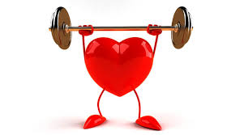
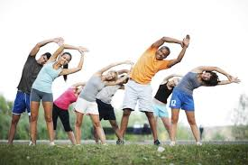

Emagrecer corretamente é um processo que exige paciência e mudança de hábitos. Nada de pular refeições ou seguir dietas malucas da internet!
Algumas dicas fundamentais:
Evite alimentos ultraprocessados e ricos em açúcar.
Inclua mais frutas, legumes e fibras na alimentação.
Beba bastante água durante o dia.
Durma bem! O sono ajuda a regular hormônios ligados ao apetite.
Conte com a ajuda de um nutricionista para montar um plano ideal.
Saúde

A saúde vai além do corpo — é equilíbrio físico, mental e emocional. Manter a saúde em dia é essencial para prevenir doenças e viver melhor.
Cuidados importantes:
Faça check-ups regularmente.
Tenha uma rotina de sono equilibrada (7-9 horas por noite).
Pratique atividades que aliviem o estresse, como meditação ou hobbies.
Evite o consumo excessivo de álcool e cigarro.
Alimente-se com variedade e moderação.
Atividades físicas

O exercício físico é essencial para o emagrecimento e manutenção da saúde. É importante escolher o tipo de atividade conforme sua capacidade e objetivo:
Leves
Caminhadas curtas
Alongamentos
Ioga e meditação em movimento
Moderadas
Corrida leve
Pedalar em ritmo constante
Hidroginástica ou dança
Intensas
Treinamento HIIT
Musculação pesada
Esportes de alta performance (futebol, crossfit, etc.)
Dica: Comece leve e vá evoluindo. O mais importante é ser constante!